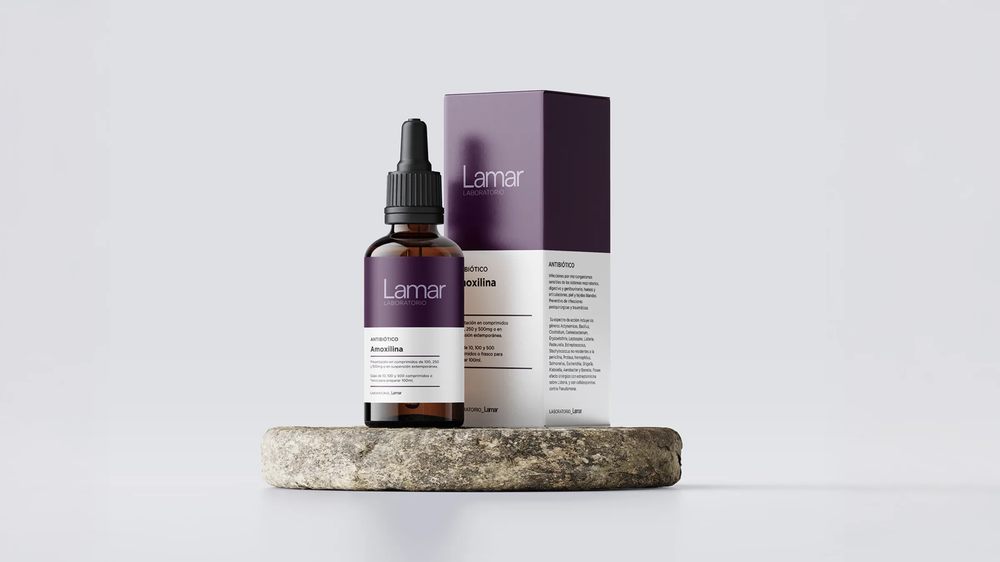
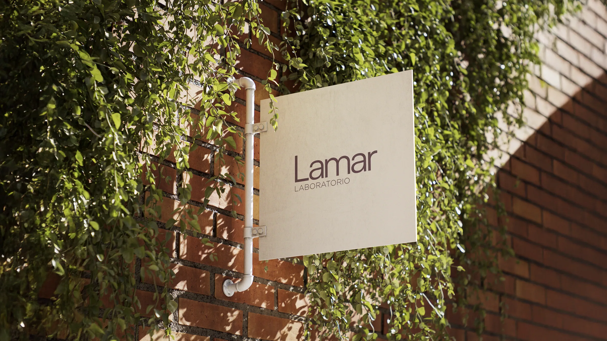
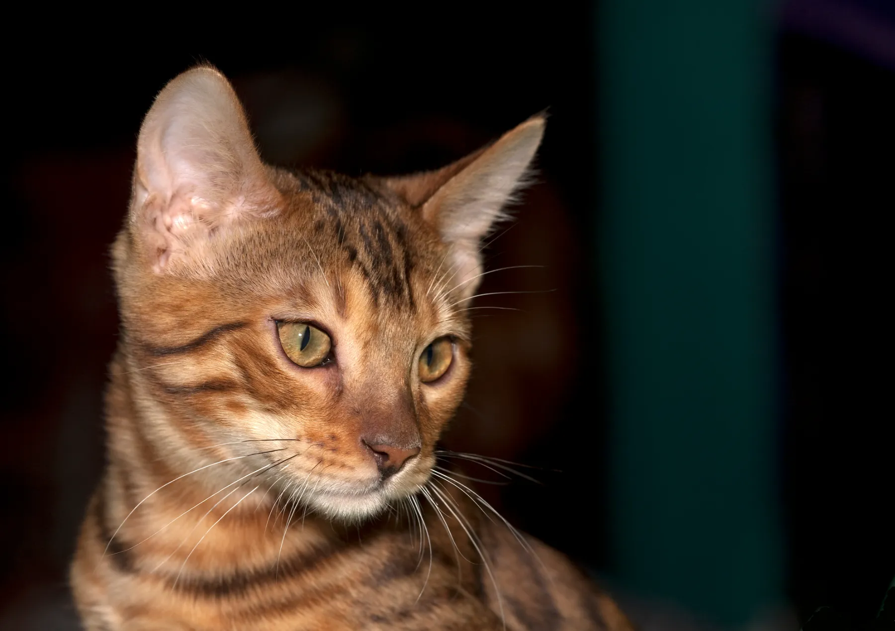

Laboratorio veterinario · Desde 1986
Medicamentos confiables para una vida mejor de las mascotas.
Desarrollamos y elaboramos en Argentina una línea completa de fármacos para perros y gatos, bajo estrictas normas de control de calidad.

10 líneas terapéuticas
Planta propia en San Fernando, Buenos Aires
Profesionales idóneos en cada etapa del proceso
Cobertura nacional a través de distribuidores


Quiénes somos
Una empresa familiar dedicada a la salud animal.
Laboratorio Lamar S.R.L. nace en 1986 en la Provincia de Buenos Aires con un objetivo claro: fabricar y distribuir productos que mejoren la salud y el bienestar de los animales de compañía.
Nuestro compromiso con el sector veterinario se traduce en medicamentos de máxima calidad, seguridad y eficiencia, a precios razonables. Un equipo especializado y el trato personal con cada cliente sostienen nuestro crecimiento.
Conozca la empresaLíneas terapéuticas
Prevenir y curar, con un portfolio completo.
Enfermedades infecciosas, parasitarias, metabólicas y carenciales: cada línea responde a una necesidad concreta de la clínica de pequeños animales.
- 01 Antibacterianos Antibióticos y quimioterápicos. 17 productos
- 02 Anticonceptivos Inhibidores del celo para perras y gatas. 3 productos
- 03 Antieméticos y laxantes Control del vómito y del tránsito intestinal. 3 productos
- 04 Antiinflamatorios y antialérgicos Corticoides y antihistamínicos. 7 productos
- 05 Antimicóticos Tratamiento de micosis de piel y pelo. 1 producto
- 06 Antiparasitarios Pulgas, garrapatas y parásitos internos. 22 productos
- 07 Diuréticos Diuresis osmótica y aporte energético. 1 producto
- 08 Expectorantes Fluidificantes de las secreciones bronquiales. 2 productos
- 09 Hormonas tiroideas Tratamiento del hipotiroidismo. 2 productos
- 10 Tranquilizantes Sedación, preanestesia y control de convulsiones. 2 productos
Productos
Algunos de nuestros productos.
Vademécum Septiembre 2026
Toda la información técnica, en un solo lugar.
Léalo en línea o descárguelo en PDF para tenerlo siempre a mano.